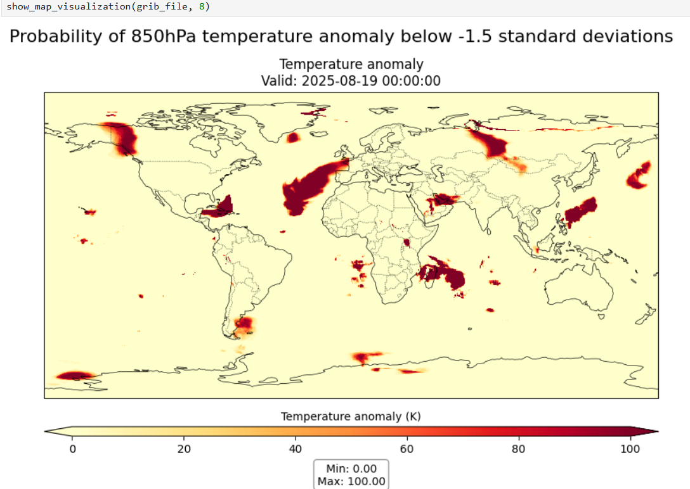

Decodificación de datos desde formatos binarios de la OMM
¡Resultados de aprendizaje!
Al final de esta sesión práctica, serás capaz de:
- ejecutar un contenedor Docker para la imagen "demo-decode-eccodes-jupyter"
- ejecutar los cuadernos Jupyter de ejemplo para decodificar datos en formatos GRIB2, NetCDF y BUFR
- aprender sobre otras herramientas para decodificar y visualizar formatos de códigos impulsados por tablas de la OMM (TDCF)
Introducción
Los formatos binarios de la OMM, como BUFR y GRIB, son ampliamente utilizados en la comunidad meteorológica para el intercambio de datos observacionales y de modelos, y típicamente requieren herramientas especializadas para decodificar y visualizar los datos.
Después de descargar datos desde WIS2, a menudo necesitarás decodificar los datos para poder utilizarlos.
Existen varias bibliotecas de código disponibles para escribir scripts o programas que decodifiquen formatos binarios de la OMM. También hay herramientas disponibles que proporcionan una interfaz de usuario para decodificar y visualizar los datos sin necesidad de escribir un programa de software.
En esta sesión práctica, demostraremos cómo decodificar 3 tipos diferentes de datos utilizando un cuaderno Jupyter:
- GRIB2 que contiene datos para una Predicción Global por Conjunto realizada por el Sistema de Asimilación y Predicción Regional Global de CMA (GRAPES)
- BUFR que contiene datos de trayectorias de ciclones tropicales del sistema de predicción por conjuntos del ECMWF
- NetCDF que contiene datos de anomalías de temperatura mensuales
Decodificación de datos descargados en un cuaderno Jupyter
Para demostrar cómo puedes decodificar los datos descargados, iniciaremos un nuevo contenedor utilizando la imagen 'decode-bufr-jupyter'.
Este contenedor iniciará un servidor de cuadernos Jupyter en tu instancia, que incluye la biblioteca ecCodes que puedes usar para decodificar datos BUFR.
Utilizaremos los cuadernos de ejemplo incluidos en ~/exercise-materials/notebook-examples para decodificar los datos descargados de las trayectorias de ciclones.
Para iniciar el contenedor, utiliza el siguiente comando:
docker run -d --name demo-decode-eccodes-jupyter \
-v ~/wis2box-data/downloads:/root/downloads \
-p 8888:8888 \
-e JUPYTER_TOKEN=dataismagic! \
ghcr.io/wmo-im/wmo-im/demo-decode-eccodes-jupyter:latest
Aquí tienes un desglose del comando anterior:
docker run -d --name demo-decode-eccodes-jupyterinicia un nuevo contenedor en modo desacoplado (-d) y lo nombrademo-decode-eccodes-jupyter-v ~/wis2box-data/downloads:/root/downloadsmonta el directorio~/wis2box-data/downloadsen tu VM en/root/downloadsdentro del contenedor. Aquí es donde se almacenan los datos que descargaste desde WIS2-p 8888:8888asigna el puerto 8888 en tu VM al puerto 8888 en el contenedor. Esto hace que el servidor de cuadernos Jupyter sea accesible desde tu navegador web enhttp://YOUR-HOST:8888-e JUPYTER_TOKEN=dataismagic!establece el token requerido para acceder al servidor de cuadernos Jupyter. Necesitarás proporcionar este token cuando accedas al servidor desde tu navegador webghrc.io/wmo-im/demo-decode-eccodes-jupyter:latestespecifica la imagen utilizada por el contenedor, que incluye previamente los cuadernos Jupyter de ejemplo utilizados en los próximos ejercicios
Acerca de la imagen demo-decode-eccodes-jupyter
La imagen demo-decode-eccodes-jupyter fue desarrollada para esta capacitación y utiliza una imagen base que incluye la biblioteca ecCodes, además de agregar un servidor de cuadernos Jupyter y paquetes de Python para análisis y visualización de datos.
El código fuente de esta imagen, incluidos los cuadernos de ejemplo, se puede encontrar en wmo-im/demo-decode-eccodes-jupyter.
Una vez que el contenedor esté iniciado, puedes acceder al servidor de cuadernos Jupyter en tu VM de estudiante navegando a http://YOUR-HOST:8888 en tu navegador web.
Verás una pantalla solicitándote ingresar una "Contraseña o token".
Proporciona el token dataismagic! para iniciar sesión en el servidor de cuadernos Jupyter (a menos que hayas utilizado un token diferente en el comando anterior).
Después de iniciar sesión, deberías ver la siguiente pantalla que lista los directorios en el contenedor:

Haz doble clic en el directorio example-notebooks para abrirlo. Deberías ver la siguiente pantalla que lista los cuadernos de ejemplo:

Ahora puedes abrir los cuadernos de ejemplo para decodificar los datos descargados.
Ejemplo de decodificación GRIB2: Datos GEPS de CMA GRAPES
Abre el archivo GRIB2_CMA_global_ensemble_prediction.ipynb en el directorio example-notebooks:

Lee las instrucciones en el cuaderno y ejecuta las celdas para decodificar los datos descargados para la predicción global por conjuntos. Ejecuta cada celda haciendo clic en ella y luego en el botón de ejecutar en la barra de herramientas o presionando Shift+Enter.
Después de ejecutar todas las celdas, deberías ver una visualización de la "Probabilidad de anomalía de temperatura a 850 hPa por debajo de -1.5 desviaciones estándar":

Question
¿Cómo actualizarías la visualización en este cuaderno para visualizar uno de los otros mensajes en el archivo GRIB2?
Haz clic para revelar la respuesta
En la última celda del cuaderno, verás el siguiente código:
# mostrar visualización para el mensaje número 8 (Probabilidad de anomalía de temperatura a 850 hPa por debajo de -1.5 desviaciones estándar)
show_map_visualization(grib_file, 8)
Puedes cambiar esta línea o agregar otra línea para visualizar uno de los otros mensajes en el archivo GRIB2 cambiando el número del mensaje:
# mostrar visualización para el mensaje número 9
show_map_visualization(grib_file, 9)
Luego vuelve a ejecutar las celdas en el cuaderno para ver el gráfico actualizado.
Ejemplo de decodificación BUFR: Trayectorias de ciclones tropicales
Abre el archivo BUFR_tropical_cyclone_track.ipynb en el directorio example-notebooks:

Lee las instrucciones en el cuaderno y ejecuta las celdas para decodificar los datos descargados de las trayectorias de ciclones tropicales. Ejecuta cada celda haciendo clic en ella y luego en el botón de ejecutar en la barra de herramientas o presionando Shift+Enter.
Al final, deberías ver un gráfico de la probabilidad de impacto para las trayectorias de ciclones tropicales:

Question
El resultado muestra la probabilidad prevista de la trayectoria de una tormenta tropical dentro de 200 km. ¿Cómo actualizarías el cuaderno para mostrar la probabilidad prevista de la trayectoria de una tormenta tropical dentro de 300 km?
Haz clic para revelar la respuesta
Para actualizar el cuaderno y mostrar la probabilidad prevista de la trayectoria de una tormenta tropical dentro de una distancia diferente, puedes actualizar la variable distance_threshold en el bloque de código que calcula la probabilidad de impacto.
Para mostrar la probabilidad prevista de la trayectoria de una tormenta tropical dentro de 300 km:
# establecer umbral de distancia (metros)
distance_threshold = 300000 # 300 km en metros
Luego vuelve a ejecutar las celdas en el cuaderno para ver el gráfico actualizado.
Decodificación de datos BUFR
El ejercicio que acabas de realizar proporcionó un ejemplo específico de cómo puedes decodificar datos BUFR utilizando la biblioteca ecCodes. Diferentes tipos de datos pueden requerir pasos de decodificación diferentes, y puede que necesites consultar la documentación para el tipo de datos con el que estás trabajando.
Para más información, consulta la documentación de ecCodes.
Ejemplo de decodificación NetCDF: Anomalías de temperatura mensuales
Abre el archivo NetCDF4_monthly_temperature_anomaly.ipynb en el directorio example-notebooks:

Lee las instrucciones en el cuaderno y ejecuta las celdas para decodificar los datos descargados de las anomalías de temperatura mensuales. Ejecuta cada celda haciendo clic en ella y luego en el botón de ejecutar en la barra de herramientas o presionando Shift+Enter.
Al final, deberías ver un mapa de las anomalías de temperatura:

Decodificación de datos NetCDF
NetCDF es un formato flexible que, en este ejemplo, reportó los valores para la variable 'anomaly' informados a lo largo de las dimensiones 'lat', 'lon'. Diferentes conjuntos de datos NetCDF pueden usar diferentes nombres de variables y dimensiones.
Uso de otras herramientas para visualizar y decodificar formatos binarios de la OMM
Los cuadernos de ejemplo demostraron cómo puedes decodificar formatos binarios de la OMM comúnmente utilizados con Python.
También puedes usar otras herramientas para decodificar y visualizar formatos de códigos impulsados por tablas de la OMM sin necesidad de escribir software, tales como:
- Panoply - una aplicación multiplataforma que grafica matrices georreferenciadas y otras de NetCDF, HDF, GRIB y otros conjuntos de datos
- ECMWF Metview - una aplicación meteorológica para análisis y visualización de datos, que admite formatos GRIB y BUFR
- Integrated Data Viewer (IDV) - un marco de software gratuito basado en Java para analizar y visualizar datos de geociencias, que incluye soporte para formatos GRIB y NetCDF
Conclusión
¡Felicidades!
En esta sesión práctica, aprendiste a:
- ejecutar un contenedor Docker para la imagen "demo-decode-eccodes-jupyter"
- ejecutar los cuadernos Jupyter de ejemplo para decodificar datos en formatos GRIB2, NetCDF y BUFR